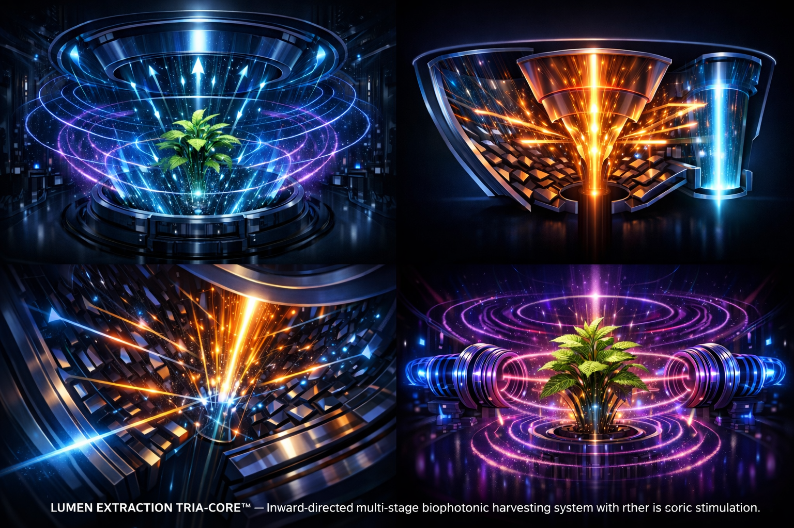
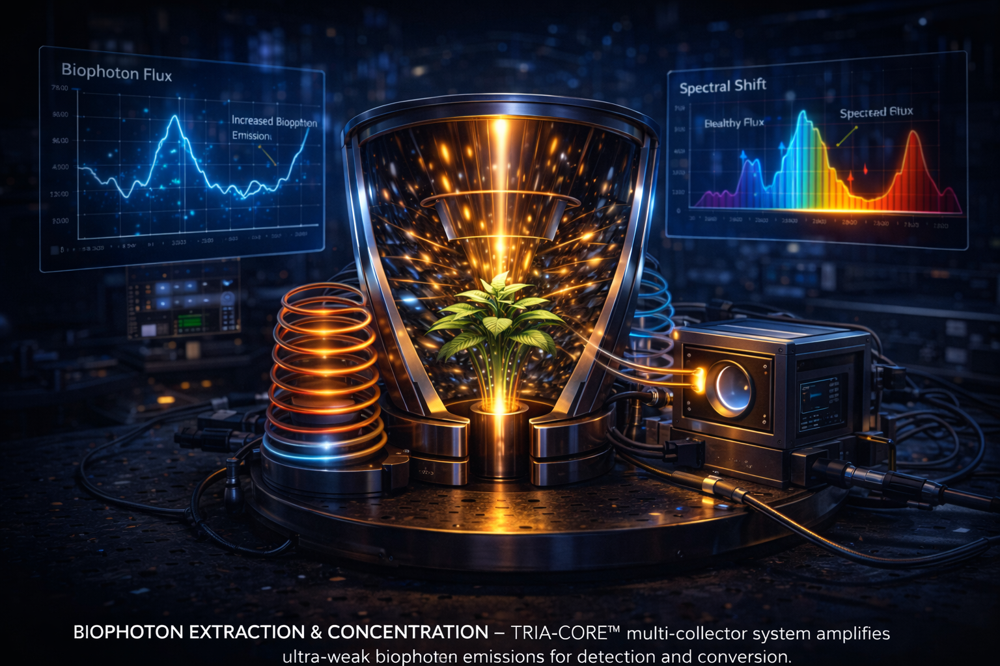
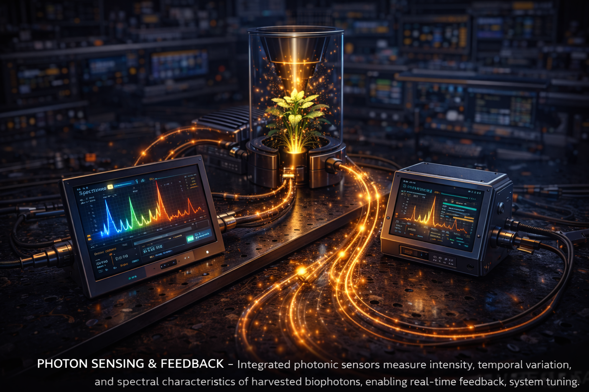
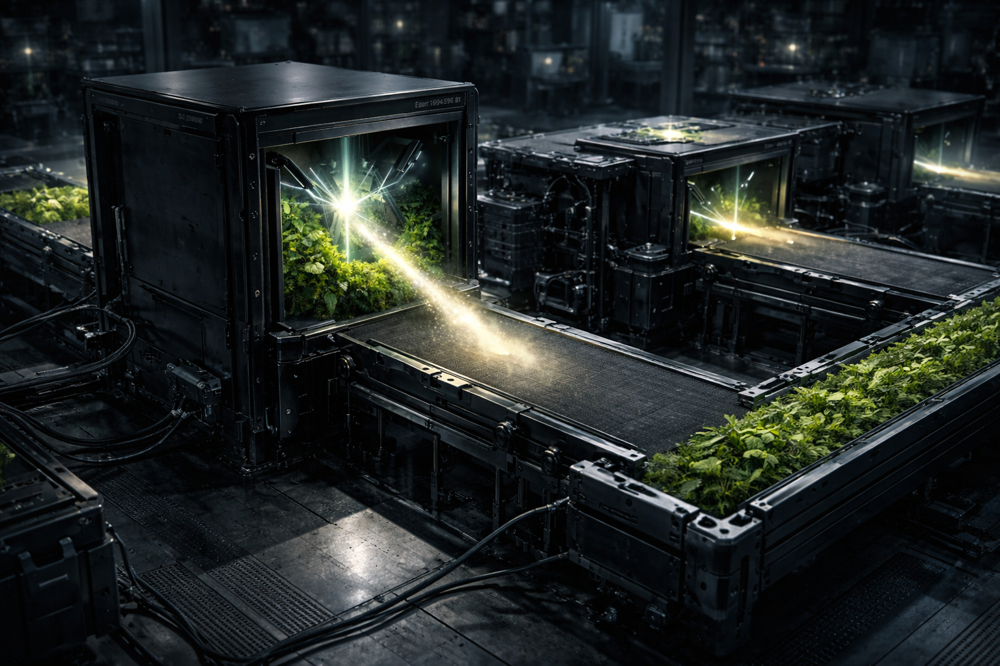

Picture a space with no visible lights — no bulbs, no panels, no fixtures. Just surface.
Then, with a signal — vibration, frequency, or pressure — those surfaces begin to emit light through direct resonance.
BioLumen · Tria
TRIA-CORE™ Inward-Directed Biophotonic Extraction System


Picture a space with no visible lights — no bulbs, no panels, no fixtures. Just surface.
Then, with a signal — vibration, frequency, or pressure — those surfaces begin to emit light through direct resonance.

Every living organism emits a constant stream of ultraweak photons (biophotons) as a byproduct of metabolic oxidative processes and cellular signaling. While these emissions are typically invisible to the naked eye, the **BioLumen™ TRIA-CORE™** system treats these emissions as a viable data and energy stream.
By utilizing inward-directed collector geometry, the system creates a "photonic funnel." This funnel focuses disparate, low-density emissions into a localized detection plane. This isn't just passive observation; it is active extraction managed by the Integrated System Controller (950), which dynamically filters environmental noise to isolate the true biological signal., which filters out environmental noise to isolate the true biological signal.
The physical deployment utilizes an inward-directed TRIA-CORE™ collector array. These high-sensitivity reception points act as the primary interface between organic matter and the detection system. Each collector is tuned to the specific photonic wavelengths of biological oxidative processes, ensuring maximum capture efficiency without invasive contact.
Once captured, the TRIA-CORE™ converts ultraweak biophotons into measurable electrical signals. This data is processed through the System 950 Integrated Controller to modulate the excitation layers, creating a Bio-Optic Feedback Loop that adapts in real-time to the vitality of the biological source.
Once captured, the TRIA-CORE™ converts these biophotons into measurable electrical signals. This data is then fed back into the system to modulate the excitation layers. This creates a Bio-Optic Feedback Loop, where the system adapts its extraction intensity in real-time based on the vitality and response of the biological source.
The complexity of biophotonic signals requires an adaptive software layer. Our implementation handles the 'Phase-Locked Loop' (PLL) synchronization between the multi-stage collector array and the central extraction core. By analyzing the frequency of photon bursts, the script predicts metabolic shifts, allowing the BioLumen™ system to remain 'in-phase' with the living organism, preventing signal collapse and maximizing energy recovery.
"BioLumen™ represents a shift from invasive energy consumption to symbiotic energy extraction—listening to the light that life is already speaking."

Non-invasive coupling interfaces capture ultraweak biophotons emitted by living organisms, enabling precise sensing and monitoring without light emission or external illumination.
Photon capture
Inward-directed TRIA-CORE™ collector geometry captures ultraweak photon emissions from organic matter.
Photon extraction
Non-invasive resonance technology for biological energy recovery through biophotonic extraction.
Energy Recovery
Advanced fiber-optic arrays route harvested light data back to the central processing unit.
Interface
Automated adjustment to biological rhythm cycles to maximize peak extraction efficiency.
Continuous CycleAdvanced fiber-optic arrays route harvested light data back to the central processing unit.
InterfaceNode Status: Online
Your contribution secures the legal patent framework and precision manufacturing for the following core milestones:
Manufacturing 360° Parabolic & Conical stage arrays.
Optimizing Electromagnetic & Sonic Resonance modules.
Legal patent protection and Micro-Energy conversion.
Secure processing via Stripe Gateway